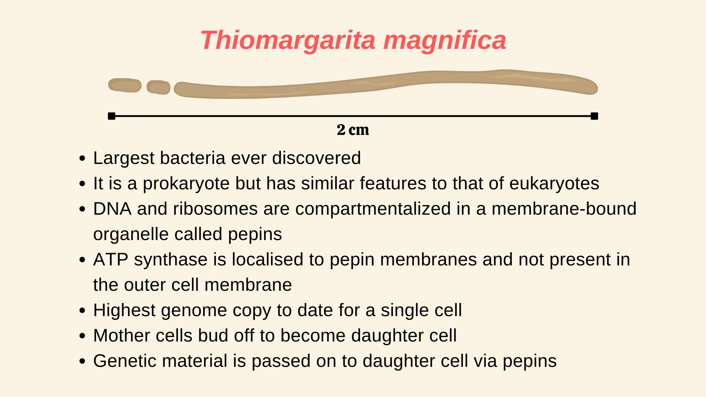
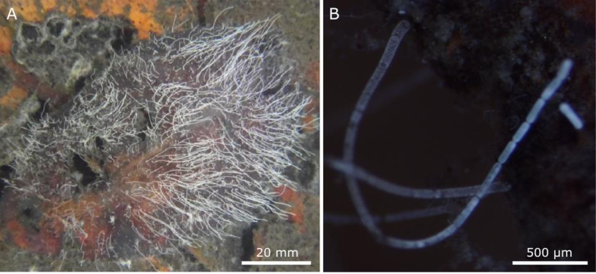
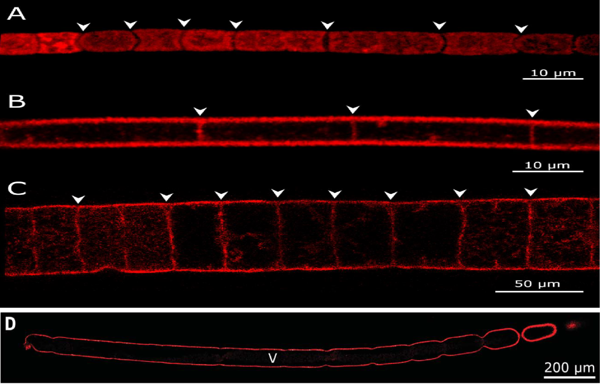
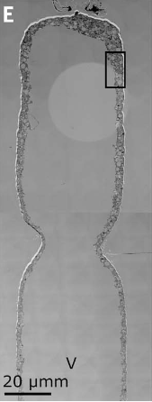
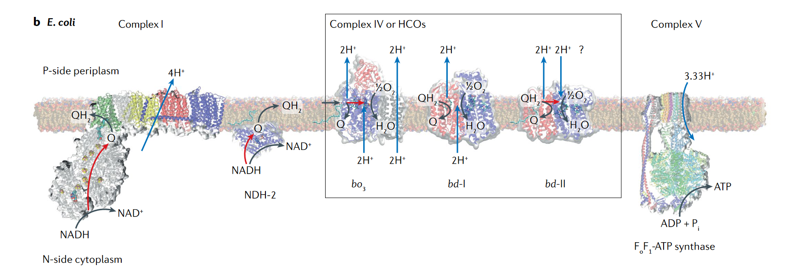
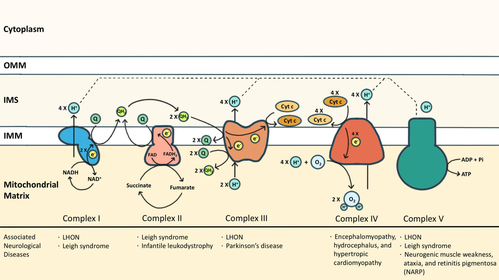

1 TL;DR

Research article that is summarised in this post: Volland, J.-M., Gonzalez-Rizzo, S., Gros, O., Tyml, T., Ivanova, N., Schulz, F., Goudeau, D., Elisabeth, N. H., Nath, N., Udwary, D., Malmstrom, R. R., Guidi-Rontani, C., Bolte-Kluge, S., Davies, K. M., Jean, M. R., Mansot, J.-L., Mouncey, N. J., Angert, E. R., Woyke, T., & Date, S. V. (2022). A centimeter-long bacterium with DNA contained in metabolically active, membrane-bound organelles. Science, 376(6600), 1453–1458. https://doi.org/10.1126/science.abb3634.
2 Introduction
When you think of bacteria, the first thing that might come to your mind is a microscope, given how tiny they are to see. Most of the bacteria and archaea are about ~ 2 \mu m in size (1). The record for the smallest living organism is shared between the pathogenic bacteria, Mycoplasma pneumoniae and the Thermodiscus sp. belonging to Archae. Both can be as small as 0.2 \mu m in size (2). The biggest bacteria was thought to be Thiomargarita namibiensis, which can be as big as 750 \mu m in size (average size is 180 \mu m) and can be seen with the naked eye (3). But the recent discovery of a new bacteria species has overtaken T. namibinesis to become the biggest bacteria ever. Moreover, it is about ~50 times bigger on average, compared to T. namibinesis and is seen in lengths of more than 9000 \mu m, which is about 1cm! To put that in perspective, a housefly, which is a complex multi-cellular organism is on average only about 0.5 \ to\ 0.7cm long!
Meet Thiomargarita magnifica, your newest species of bacteria, which as we know is the biggest bacteria to date. As reported by a group of researchers in a recent paper (1) in Science, there is more than just the size that makes this bacteria special. Thiomargarita magnifica is packed with so many complex features that it is blurring the lines between what we considered to be prokaryotes and eukaryotes.
3 Discovering the biggest bacteria

(A) Shows Thiomargarita magnifica (white-filaments) attached to sunken leaves of Rhizophora mangle.
(B) Buds forming on the apical pole the filament
Researchers first discovered Thiomargarita magnifica attached to the sunken leaves of Rhizophora mangle (as seen in Figure 1) present in the shallow tropical marine mangroves from Guadeloupe, Lesser Antilles, a French overseas province. The bacteria appeared as a long-white filament and was first thought to be a fungus. It was only later through various techniques that the researchers concluded that this is not a fungus, but a new species of bacteria and rather a very long one that is. Since the bacteria is not yet culturable in laboratory conditions, under the nomenclature followed in microbiology, they are called Candidatus (Ca.) Thiomargarita magnifica.
4 Elucidating the biggest bacteria
4.1 The whole filament is a single bacterial cell

In all the images the red outline represents the plasma membrane, arrowheads represent division septa and “V” in the image (D) represents a large central vacuole.
(A) Cell membrane of Cyanobacterium Microcoleus vaginatus showing discontinuity throughout the filament because of the presence of division septa.
(B) The membrane septum separating vacuolated cells of a Beggiatoa-like filament.
(C) The membrane septum separating the large vacuolated cells of the Marithrix-like bacterial filaments.
(D) Continuous cell membrane of with no division septa in (Ca.) T. magnifica.
(Ca.) T. magnifica belongs to the family of large sulphur bacteria (LSB). LSBs are known to form long filaments of lengths up to 200 \mu m (4–6). But these filaments are built up of individual LSB cells and therefore cannot be considered as a single living organism. Thus, the white filament was initially thought to be made of individual cells. To check this, researchers used dyes to visualize the entire plasma membrane of the filament. If it was made of individual cells, then the dye will show discontinuity in the plasma membrane structure indicating septa divisions. But to their surprise, they found no discontinuity and concluded that the whole filament is a single bacterial cell (as seen in Figure 2). Moreover, the filaments also had small buds forming from its apical pole and some of these filaments along with the buds were up to 2cm in size.
4.2 Inside the biggest bacteria: Large central vacuole, sulphur granules and pepins

Interestingly the whole filament was not filled with the cytoplasm rather, a large central vacuole was present in the middle (as seen in Figure 2 and Figure 3). This vacuole pushed the cellular cytoplasm to its periphery. The vacuole contributed to around 70% of the total cell volume. Therefore, although the cell is large, most of its volume is metabolically inactive. Apart from the vacuole, lucent vesicles were also found, which when further analyzed revealed to be filled with sulfur granules (see Figure 4). As Thiomargarita spp. are sulfur-oxidizing gammaproteobacteria (7), this was not a surprise.
Additionally, electron-rich membrane-bound compartments were found within the cytoplasm (see Figure 4), which was similar to structures previously reported in other LSBs. They were hypothesized to be compartments containing ribosomes and genetic material (8). To check if this holds, researchers used a stain to check where the genetic material was localized in (Ca.) T. magnifica. It was found that almost all of its DNA was concentrated inside these compartments. Further analysis also showed evidence of structures that were 10 to 20 nm in size, inside these compartments, similar to ribosomes. Researchers then used a technique to look for ribosomal RNAs and confirmed their presence inside these structures which indicated that those structures were ribosomes. Adding to this evidence, when translational activity was checked, they were consistently seen within most of the sites where ribosomal RNA was found.

These membrane-bound structures containing DNA and ribosomes, which were not seen attached to the cell membrane are equivalent to the compartmentalization seen in eukaryotes, where DNA is present inside the nucleus and ribosomes are attached to the endoplasmic reticulum. Thus, this new membrane-bound organelle was named ‘pepins’ by the researchers, because of how they resemble pips or seeds in a watermelon. Overall, the cytoplasm of (Ca.) T. magnifica contained sulfur granules, pepins and various membrane structures forming a complex membrane network that spanned the whole cytoplasm.
4.3 Localization of ATP synthase


Another defining feature between eukaryotes and prokaryotes is the localization of ATP synthase. In eukaryotes, the ATP synthase is localized in the mitochondrial membrane where the electron transport chain (ETC) protein complexes are present (10). But for bacteria and archaea, mitochondria are absent and the ATP synthase is localized to the cell membrane along with the other protein complexes present in the ETC (9). Researchers checked within (Ca.) T. magnifica, where the ATP synthase is localized. Surprisingly ATP synthase was found in the membranes of pepins and the complex membrane structure, throughout the cytoplasm (see Figure 6). But ATP synthase was absent in the cellular membrane, this was similar to eukaryotes, where ATP synthase is only present in the mitochondria, which is present within the cytoplasm. These results together elevated pepins as not just a housing compartment for ribosomes and DNA, but also as a potential energy-producing organelle.

The surprises do not stop there. Researchers further found that (Ca.) T. magnifica also showed extreme polyploidy, with around 740,000 genome copies for a 2 cm long cell. This is the highest number of genome copies ever reported for a single cell. The genome copies were very similar in their composition. A single genome copy was found to be 11.5 and 12.2 Mb in size, comparable to the popular Saccharomyces cerevisiae genome (12.1 Mb). (Ca.) T. magnifica genome had around 11,788 genes, more than three times the median gene count of prokaryotes (3935 genes) (11). Interestingly many of the common genes present within prokaryotes which coded for proteins that are responsible for cell division were absent here. But cell elongation protein genes were found to be intact and were found to be duplicated, forming multiple copies placed beside each other in the genome, which might suggest a possible reason why (Ca.) T. magnifica grow so long.
The researchers also found that, unlike most bacteria which reproduce via binary fission where cell volume doubles before cell division, in (Ca.) T. magnifica, they follow a dimorphic lifecycle; a bud-like cell stage and a filament-like cell stage. When they reproduce, the apical pole of the filament mother cell constricts and buds off to become a daughter cell (see Figure 1 and Figure 2). Interestingly, the genetic material is passed on to the daughter cell via pepins which is never seen before in bacteria.
5 Conclusion
Overall (Ca.) T. magnifica turned out to be a very bizarre form of bacterial species that under the current understanding of cell morphology and energetics should not exist. So how come we find this bacteria in nature? Most bacteria are unable to grow to large sizes as they are met with various constraints related to energy and space. An overview of these constraints is given below.
As bacteria lack any mode of intracellular transporters to transport materials across the cytoplasm, they rely exclusively on diffusion. Chemical diffusion is extremely slow and is only effective in micro meter distances. So if the cell is too large, it will take a tremendous amount of time to disperse proteins and other materials effectively across the cell (2).
When cell size increases, it reaches a point where the number of ribosomes needed to sustain the cell exceeds the available cell volume. This is called ‘ribosome catastrophe’ and the upper limit of the cell volume for this catastrophe is 1.39±0.03 × 10^{−15}m^3. The reported cytoplasmic volume of (Ca.) T. magnifica was around 5.91 × 10^{−12} m^3, which is several orders greater than the ribosome catastrophe limit (12).
Plasma membrane is the only location where ATP production can happen via the electron transport chain (ETC). And for bacteria and archaea, the only available membrane that they can use for ETC is their cellular membrane. Therefore as cell size increases, the surface area increase will quickly be outpaced by the volume increase owing to their differences in orders of increase. And as volume increase is followed by increased metabolic activity, energy production will become a bottleneck (12, 13).
Now even if these constraints make perfect sense in the context of cell biology, there are always outliers in nature which defy them. One such outlies is this recently discovered bacterial species: (Ca.) T. magnifica.
How is (Ca.) T. magnifica overcoming these constraints? First of all, they have multiple copies of their genome compartmentalised along with ribosomes inside pepins. And these pepins are present across the cytoplasm. This might solve the diffusion limit problem because now the protein and other materials are almost always accessible across the cytoplasm at any time. Efficient compartmentalisation again might be the answer to surpassing the ribosome limit. In the case of the energy production limit attained due to surface area constraints, for (Ca.) T. magnifica, ATP synthase is expressed within the cytoplasm via pepin membranes and the complex membrane structure. Therefore, the available plasma membrane for energy production is much higher compared to other prokaryotes.
In the end, when we look at these features carefully, it is analogous to the various features present in eukaryotes. The polyploid genome of (Ca.) T. magnifica is equivalent to polypoid mtDNA present in eukaryotes. Compartmentalisation of DNA and ribosome via pepins is equivalent to compartmentalisation seen in the nucleus and the endoplasmic reticulum. And perhaps the icing on the cake is that (Ca.) T. magnifica transfers its genetic material via a membrane-bound organelle; pepins, something that is never seen before in prokaryotes. Therefore (Ca.) T. magnifica stands as one of the extreme cases of bacterial evolution which blurs our understanding of what constitutes a eukaryote and a prokaryote.
For more details about the study, please find the original paper (1).
References
Reuse
Citation
@online{johnson2022,
author = {Johnson, Jewel},
title = {The World’s Largest Bacteria Is Bigger Than a Housefly},
date = {2022-07-14},
url = {https://sciquest.netlify.app//posts/research_article_biggest_bacterium/index_post.html},
langid = {en}
}